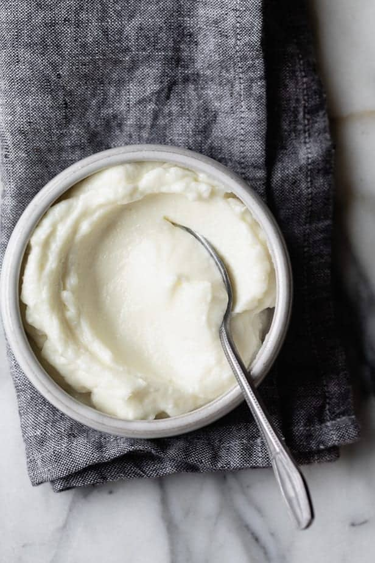

Odin's Garlic Paste

Description
As it is exactly described, garlic paste is nothing but blended garlic with some oil or water. You can either store in the refrigerator or freezer and take it out when your recipe calls for it.
Ingredients
- garlic cloves 40nos
- sunflower/avocado oil 0.75cups
Steps
- Crush the garlic cloves
- Add garlic cloves to blender and blend, while pouring a stream of avocado or sunflower oil